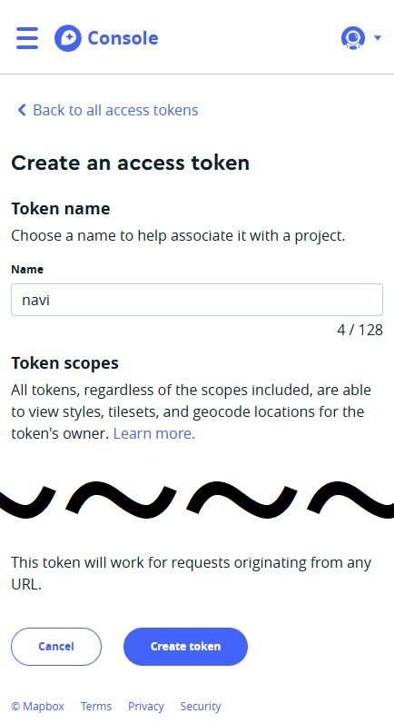
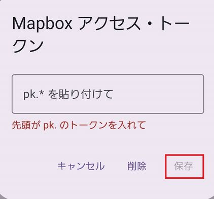

アプリ概要
このアプリは、ナビ音声を好みの声に変えたいという思いから作られたナビゲーションアプリです。面倒だと感じない方は、以下の手順に従ってインストールしてください。
必要なもの
- Android端末
- クレジットカード（Mapboxの登録に必須）
費用について
Mapboxには無料枠があります。取得したトークンを公開・配布しない限り、個人利用で無料枠を超過することはほぼありません。
📥 ダウンロード
下のボタンから SwitchVoiceNavi.apk をダウンロードできます。
SwitchVoiceNavi.apk をダウンロード提供元不明のアプリを一時的に許可してください（インストール後に戻すと安心です）。
⚙️ インストール手順
- 上のボタンから SwitchVoiceNavi.apk をダウンロードします。
- Androidの設定を開きます。
- 設定 → セキュリティ → 提供元不明のアプリを許可 をONにします。
- ダウンロードしたファイルを開き、インストールを実行します。
- アプリ起動後、位置情報アクセス等の許可を求められます → 許可 を選択してください。
🗺️ Mapboxでトークン取得(どうしても取得がめんどう出来ない方はDMください。トークンを送ります。)

ユーザー登録（パスワードは大文字・小文字・記号の複合が必須です）。 クレジットカードの登録を行います（無料枠があるため、通常利用では課金されません）。 左上のメニュー（三本線）から「Tokens」を選択します。 
「Create a token」を押します。  Name に「navi」など任意の名前を入力し、画面下の「Create token」を押します。 
生成されたトークンが表示されます。ボタンからコピーしてください。 アプリの「地図トークン」に先ほどのトークンを貼り付けます。  保存すると背景地図が読み込まれれば成功です。読み込まれない場合は設定を見直してください。
📢 TTSの設定
まず ボイボTTS をインストールします。

ボイボTTSを起動し、声の項目をタップします。 「ずんだもん」をダウンロードします。 Androidの「テキスト読み上げ」設定を開きます（アプリ側から開いてもOKです）。 優先エンジンを「ボイボTTS」に変更します。 Naviアプリの「TTSテスト」ボタンで声が流れれば成功です。 
「ずんだ仕様」をオンにすると、語尾が「〜のだ」になります。 
ナビ開始後は、右上のスピーカーボタンを一度押してミュートにしてください（デフォルト音声と重なるのを防ぐため）。